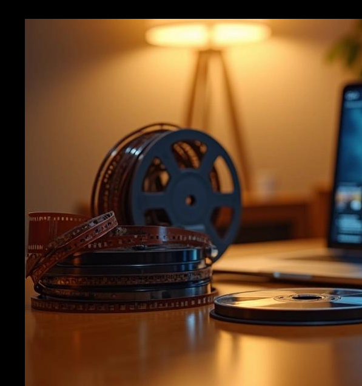

There was a time when watching a film meant discovering something you had never encountered before.
A new character. A strange world. An unfamiliar story.
Today, discovering a new film can sometimes feel like discovering an adaptation of something we already know.
A bestselling novel becomes a series. A popular fantasy trilogy becomes a franchise. A short story becomes a streaming drama. A decades-old film is remade. A comic becomes a cinematic universe. A game becomes a television series.
And audiences keep watching.
The Comfort of a Story We Already Know
There is something comforting about entering a story with expectations.
When someone has already read a book, they know the characters. They know the world. They may already have imagined what the protagonist looks like, how a particular scene should feel and what a fictional location should look like.
Watching the adaptation becomes partly an act of comparison.
Was the casting right?
Did the costume look the way I imagined it?
Was the scene as emotional as it was in the book?
This familiarity creates an unusually strong emotional investment.
The Rise of the Book-to-Screen Phenomenon
The popularity of book adaptations is not exactly new. Cinema has been adapting literature since the earliest days of filmmaking.
What has changed is the scale and speed of the phenomenon.
Streaming platforms have transformed long-form storytelling. A novel that might once have been compressed into a two-hour film can now become an eight-episode series.
This has created space for stories that depend heavily on character development, multiple relationships and complicated worlds.
“The world that existed in their imagination can finally become visible.”
The Problem of the “Perfect” Adaptation
Perhaps one of the strangest expectations audiences have developed is the idea that an adaptation should reproduce the book perfectly.
But what does “perfect” actually mean?
A novel can spend several pages describing a character's thoughts. A television series cannot simply film someone's internal monologue.
A novelist can introduce dozens of characters. A series may need to combine several of them.
Adaptation is therefore not photocopying.
Adaptation is translation.
And translation always changes something.

But Are Studios Playing It Too Safe?
At the same time, it would be unfair to place all the responsibility on audiences.
The entertainment industry has become increasingly dependent on recognizable intellectual property.
From a business perspective, the logic is obvious.
If millions of people have already bought a book, watched an earlier film, played a game or followed a fictional universe, the project already has an identifiable audience.
An entirely original story is a much bigger gamble.
This creates a difficult cycle.
Studios make adaptations because audiences are likely to recognize them. Audiences become accustomed to adaptations. Studios then see that familiarity as evidence that audiences want more adaptations.
And suddenly, originality becomes the riskier business decision.
The Algorithm Has a Role Too
Streaming has added another layer to the problem.
Recommendation systems are designed to predict what we might enjoy based on what we have already watched.
If you watch adaptations, the platform learns that you are likely to click on another adaptation.
The result can create a comfortable entertainment bubble.
We are constantly being shown versions of things we already like.
But it can also make discovery harder.
When Fans Become Gatekeepers
Social media allows fans to discuss casting, costumes, trailers and scripts months before a series is released.
Sometimes this is wonderful. Fans can celebrate a faithful adaptation and introduce newcomers to the original book.
But there is also another side.
The audience can become so attached to its own interpretation of a story that there is no room for a new one.
“Did it reproduce my imagination correctly?”
That is an impossible test.
Are We Losing Authenticity?
Authenticity in storytelling does not necessarily mean originality.
An adaptation can be deeply authentic to the emotions of its source material even when it changes the plot.
Perhaps what we are really losing is not authenticity but risk.
Original stories require audiences to trust something they don't recognize.
But Maybe the Audience Isn't Failing
It is easy to blame audiences.
But audiences still respond to originality when it is presented well.
When an unfamiliar film or series breaks through culturally, people often embrace it precisely because it feels different.
They may simply need to find it.
The Strange Relationship Between Books and Their Adaptations
There is also something beautiful about the obsession with adaptations.
Reading is an intensely personal experience.
Two people can read the same paragraph and imagine completely different faces, rooms and landscapes.
Cinema takes that private experience and turns it into a shared visual one.
“The personal imagination becomes collective imagery.”
When Cinema Creates Something Better
Some adaptations become so successful that people forget how strange it is that they began as books.
Adaptation can become its own art form.
The book gives filmmakers the architecture.
Cinema provides a different language: performance, sound, editing, cinematography, music and visual composition.
The best adaptations don't simply ask:
“How do we reproduce the book?”
They ask:
“What can cinema do with this story that literature cannot?”
So, Are We Losing Authenticity?
Maybe.
But perhaps the more accurate question is:
“Are we losing our appetite for uncertainty?”
Original storytelling asks us to enter the unknown. Adaptations ask us to enter something familiar from a new door.
Neither is inherently better.
The danger appears when familiarity becomes the only thing the industry is willing to offer—or the only thing audiences are willing to accept.
The industry needs to be brave enough to tell unfamiliar stories.
And audiences need to be brave enough to watch them.
Maybe we're simply becoming less willing to look for original stories.